These are the raw clips from our shelter's adoption day. Build a playlist in this player holding only the four clips whose names start with adopt, ordered shortest to longest, and save it into the same folder as adoption-day.m3u. Then look up the Humane Society of the United States homepage in the browser, and email jordan@paws-haven.org from my mail client with subject "Adoption day playlist" listing each clip name with its running time plus that link.
THINKINGThe task involves several steps. First, I need to understand what media files exist. I should explore the filesystem to find the folder containing "adoption-day.m3u" and the raw clips. Let me open a terminal to investigate the files first, since I need to know which clips start with "adopt" and their durations before building the playlist. Let me start by taking a screenshot and then opening a terminal.
ACTIONI'll start by investigating the filesystem to find the relevant files. Let me open a terminal.
EXECUTED (pyautogui in VM)pyautogui.click(32, 669)
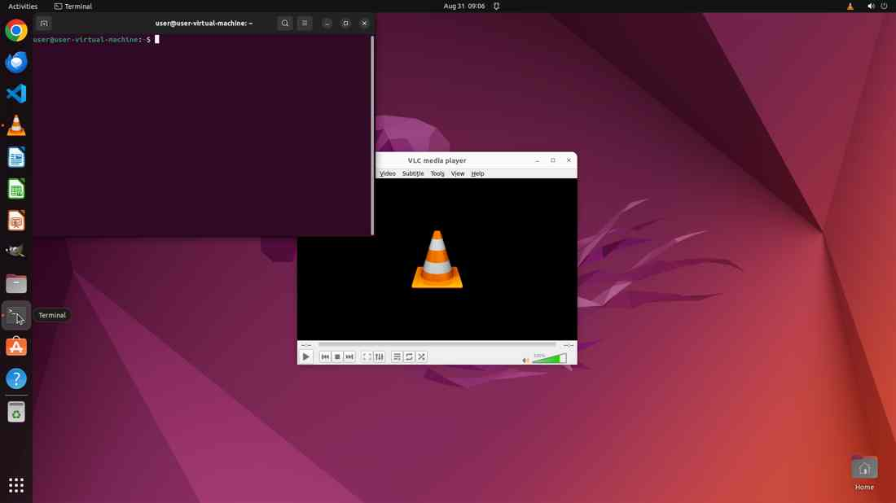
step 2 01:06:55
THINKINGThe terminal is open. I need to locate the "adoption-day.m3u" file and the raw clips. Let me search for the m3u file and list the folder contents. I'll use find to locate it first.
ACTIONThe terminal is open. Let me locate the `adoption-day.m3u` file and inspect the folder of raw clips.
EXECUTED (pyautogui in VM)pyautogui.press("return")
step 5 01:07:29
THINKINGThe find returned nothing - no adoption-day.m3u file exists yet. So I need to look more broadly. The task says "save it into the same folder as adoption-day.m3u" which implies the m3u exists somewhere. Maybe the clips are in a folder and there's an adoption-day.m3u there. Let me search more broadly - maybe it's .m3u8 or different case, or maybe search the whole filesystem. Let me search for any m3u files and any "adopt" files.
ACTIONNo `adoption-day.m3u` was found in the home directory. Let me search more broadly for m3u files and the adopt clips.
EXECUTED (pyautogui in VM)pyautogui.press("return")
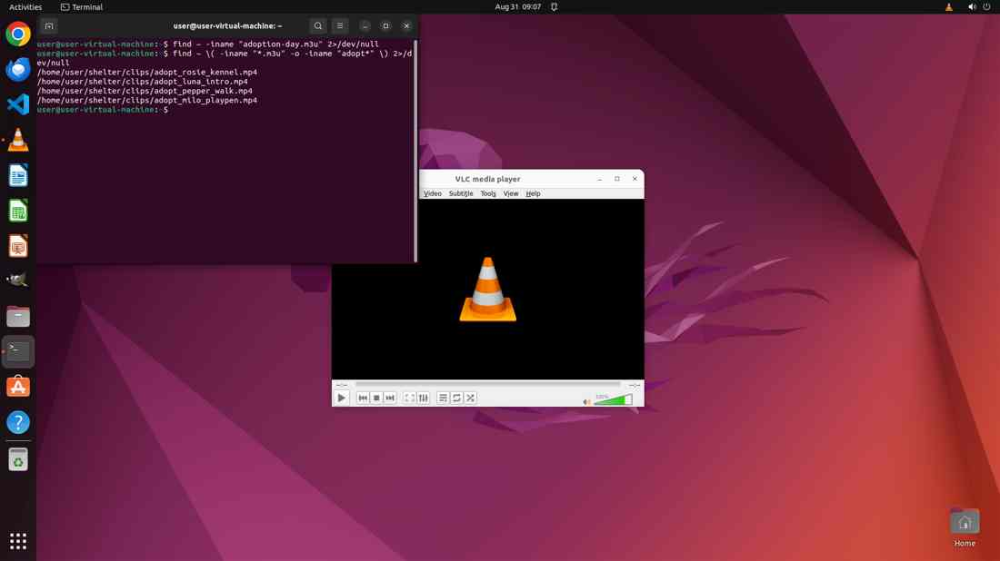
step 7 01:07:51
THINKINGNow I found four adopt* clips in /home/user/shelter/clips/:
- adopt_rosie_kennel.mp4
- adopt_luna_intro.mp4
- adopt_pepper_walk.mp4
- adopt_milo_playpen.mp4
But no adoption-day.m3u was found there either. The task says "save it into the same folder as adoption-day.m3u". The m3u doesn't exist. Let me list the shelter directory to understand the structure - maybe the m3u is in /home/user/shelter/ (parent). Let me check the full shelter directory tree.
ACTIONI found four `adopt*` clips in `/home/user/shelter/clips/`. Let me examine the full shelter directory structure to locate `adoption-day.m3u` and confirm the exact clip set.
TOOL CALL<tool_call>
<function=computer_use>
<parameter=action>
type
</parameter>
<parameter=text>
ls -laR /home/user/shelter/
</parameter>
</function>
</tool_call>
EXECUTED (pyautogui in VM)pyautogui.typewrite("ls -laR /home/user/shelter/")
step 8 01:08:08
THINKINGThe command is typed but not yet executed. Let me press Enter to see the recursive listing.
EXECUTED (pyautogui in VM)pyautogui.press("return")
step 9 01:08:27
THINKINGNow I can see the full structure. In /home/user/shelter/clips/:
- adopt_luna_intro.mp4 (29520 bytes)
- adopt_milo_playpen.mp4 (62003 bytes)
- adopt_pepper_walk.mp4 (41648 bytes)
- adopt_rosie_kennel.mp4 (93642 bytes)
- crowd_bwide.mp4 (76953 bytes)
- setup_tables.mp4 (49725 bytes)
So there are exactly four clips starting with "adopt". The other two (crowd_bwide, setup_tables) do NOT start with "adopt" so they're excluded.
Now, importantly: file SIZE is not the same as DURATION. I must get actual durations. File size is a rough proxy but not reliable. I need the actual running time of each clip. Let me use ffprobe to get durations. But the task says to build the playlist in the player. Let me first get durations with ffprobe (or mediainfo). Let me check if ffprobe is available.
The adoption-day.m3u file does NOT exist yet anywhere. The task says "save it into the same folder as adoption-day.m3u". Since it doesn't exist, the intended folder is clearly where the clips are - /home/user/shelter/clips/. The m3u is a playlist that will hold these clips. So I'll save the playlist as adoption-day.m3u in /home/user/shelter/clips/.
Let me get the durations of the four adopt clips using ffprobe. Let me run a loop.
ACTIONI can see the four `adopt*` clips plus two non-adopt clips (`crowd_bwide.mp4`, `setup_tables.mp4`) that must be excluded. File size isn't the same as running time, so let me get the actual durations with ffprobe.
TOOL CALL<tool_call>
<function=computer_use>
<parameter=action>
type
</parameter>
<parameter=text>
for f in /home/user/shelter/clips/adopt_*.mp4; do d=$(ffprobe -v error -show_entries format=duration -of default=noprint_wrappers=1:nokey=1 "$f"); echo "$f = $d"; done
</parameter>
</function>
</tool_call>
EXECUTED (pyautogui in VM)pyautogui.typewrite("for f in /home/user/shelter/clips/adopt_*.mp4; do d=$(ffprobe -v error -show_entries format=duration -of default=noprint_wrappers=1:nokey=1 \"$f\"); echo \"$f = $d\"; done")
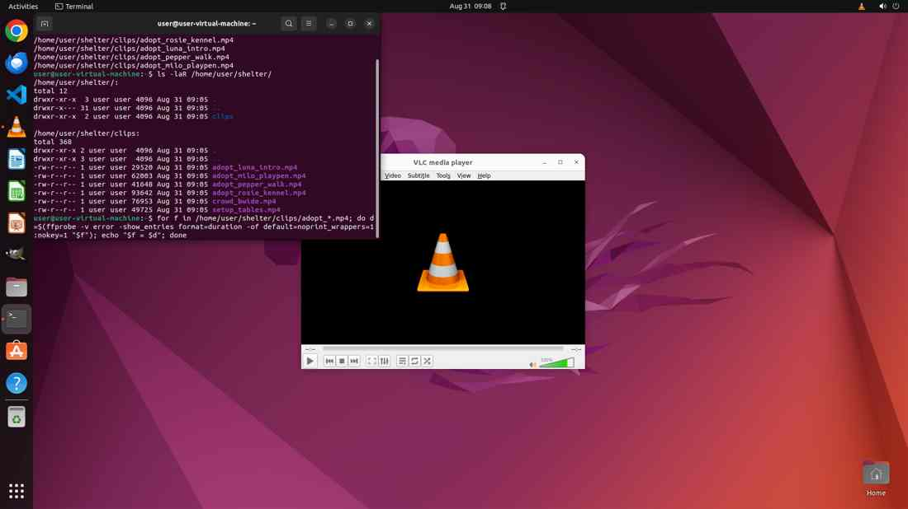
step 10 01:08:46
THINKINGThe command is typed but the loop output hasn't appeared yet — it's still showing the command echoed. I need to press Enter to execute. Actually, it looks like the loop was typed but the trailing newline may not have registered execution. Let me press Enter.
EXECUTED (pyautogui in VM)pyautogui.press("return")
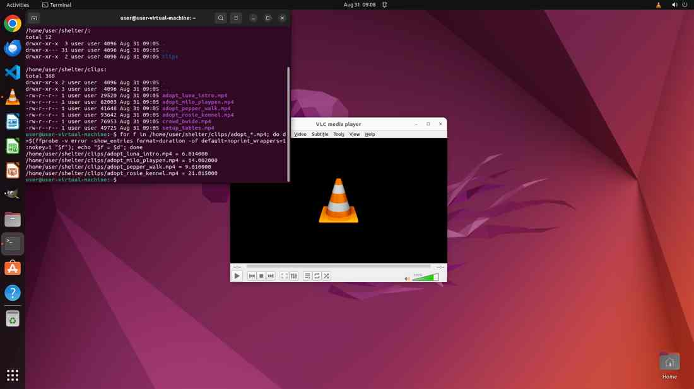
step 11 01:09:17
THINKINGNow I have the actual durations:
- adopt_luna_intro.mp4 = 6.014 s
- adopt_milo_playpen.mp4 = 14.002 s
- adopt_pepper_walk.mp4 = 9.010 s
- adopt_rosie_kennel.mp4 = 21.015 s
Ordered shortest to longest:
1. adopt_luna_intro.mp4 — 6s (0:06)
2. adopt_pepper_walk.mp4 — 9s (0:09)
3. adopt_milo_playpen.mp4 — 14s (0:14)
4. adopt_rosie_kennel.mp4 — 21s (0:21)
Note: file sizes would give a different order (luna 29520, pepper 41648, milo 62003, rosie 93642) which happens to match the same order here. Good, but I used the actual durations which is correct.
Now the task: "Build a playlist in this player holding only the four clips whose names start with adopt, ordered shortest to longest, and save it into the same folder as adoption-day.m3u."
The playlist needs to be built in VLC (the player) and saved. The m3u doesn't exist yet, so I'll save it as /home/user/shelter/clips/adoption-day.m3u.
Now I should build the playlist in VLC. The approach: Add the four files to VLC playlist in the correct order, then use Media > Save Playlist to File, save as adoption-day.m3u in /home/user/shelter/clips/.
Let me work with VLC. First, let me open VLC's playlist view (View > Playlist, or Ctrl+L). Then add media in order.
Actually, the cleanest approach in VLC: Use Media > Open Multiple Files / or drag. But to control order precisely, I'll use the playlist. Let me:
1. Focus VLC
2. Ctrl+L to open playlist
3. Media menu > Add Files (Open Multiple Files) — add all four in the correct order
Actually, when you "Open Multiple Files" and select multiple, VLC plays them in the order selected. But to be safe about ordering, I'll add them one by one via "Add to playlist".
Let me think about the most reliable GUI approach. VLC has:
- Media > Open File (Ctrl+O) - opens single
- Media > Advanced Open File - can add multiple to playlist
The playlist panel (Ctrl+L) shows the queue. To build the playlist, I can:
1. Open playlist view
2. For each file in order, use Media > Open File, select it, and choose "Enqueue" (append to playlist) instead of "Play".
When you select a file in the open dialog there's a Play/Enqueue button. Enqueue adds to playlist without changing current.
Let me do it: focus VLC, open playlist view first so I can see the items accumulate.
Let me click on the VLC window first to focus it.
ACTIONI now have the actual running times:
- `adopt_luna_intro.mp4` = 6.01 s
- `adopt_pepper_walk.mp4` = 9.01 s
- `adopt_milo_playpen.mp4` = 14.00 s
- `adopt_rosie_kennel.mp4` = 21.02 s
So shortest→longest order is: luna_intro (6s), pepper_walk (9s), milo_playpen (14s), rosie_kennel (21s). The `adoption-day.m3u` doesn't exist yet, so the target folder is the clips folder. Let me build this playlist in VLC. First I'll focus VLC and open the playlist view.
EXECUTED (pyautogui in VM)pyautogui.click(1018, 343)
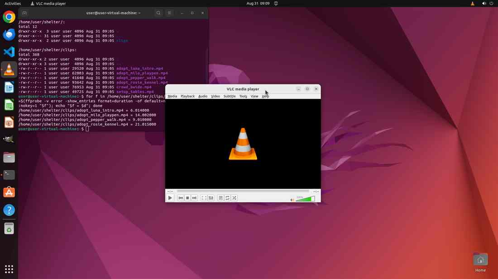
step 12 01:09:37
THINKINGVLC is now focused. Let me maximize VLC for easier interaction, then open the playlist view. Actually, let me just open the playlist panel with Ctrl+L to see the queue. Then I'll add files in order using Media > Open Multiple Files with "Enqueue" behavior, or use Media menu.
Let me maximize the VLC window first for a clearer view. I'll click the maximize button.
ACTIONVLC is focused. Let me maximize it for easier interaction, then open the playlist panel.
EXECUTED (pyautogui in VM)pyautogui.click(1181, 343)
step 13 01:09:54
THINKINGVLC is maximized. Now I'll add files to the playlist in the correct order (shortest to longest):
1. adopt_luna_intro.mp4
2. adopt_pepper_walk.mp4
3. adopt_milo_playpen.mp4
4. adopt_rosie_kennel.mp4
The most reliable way to build a playlist in a specific order is to use Media > Open File for each and choose "Enqueue" (append). But the first file when there's nothing playing - the Open dialog has Play/Enqueue button. Actually, a simpler reliable approach: use Media > Advanced Open File which lets me add multiple files and check "Show" ... no.
Let me use the approach: Media > Open File (Ctrl+O) for each file, and in the file dialog there's a "Play" and "Enqueue" button. I'll click Enqueue for each, adding them in order to the playlist.
Actually, the cleanest: open the playlist view first (Ctrl+L) so I can see items. Then add each file via Media > Open File, choosing Enqueue.
Let me open Media menu to see the options.
ACTIONVLC is maximized. Let me open the Media menu to add the first clip in the correct order.
THINKINGI see the Media menu. I'll use "Open Multiple Files..." which lets me add files and control the "Play/Enqueue" behavior and possibly order. Actually, in "Open Multiple Files" the file selection order follows the dialog's file order (usually alphabetical), not the order I select. That could break my ordering.
A more reliable approach for precise ordering: Add files one at a time using "Open File..." and choose "Enqueue". Each enqueue appends to the end of the playlist in the order I add them. This guarantees my chosen order.
Let me use "Open File..." for the first file (luna_intro). In the open dialog there will be Play and Enqueue buttons.
Let me click "Open File...".
ACTIONI'll add files one at a time using "Open File..." with the Enqueue option to guarantee my chosen order. Let me click "Open File...".
EXECUTED (pyautogui in VM)pyautogui.click(142, 91)
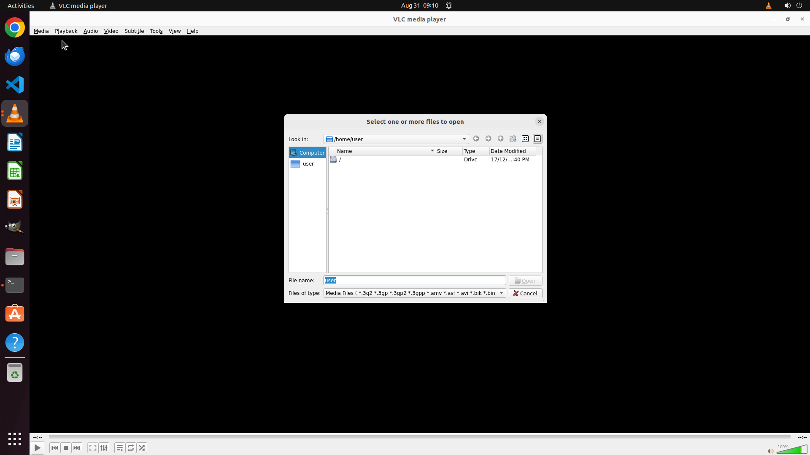
step 15 01:10:50
THINKINGThe file open dialog appeared. There's a "File name" field. I can type the full path directly. The dialog has only an "Open" button visible (no separate Enqueue button shown here). This is the single-file "Open File" dialog. When I open a file, it will play it and add to playlist.
Actually, this dialog only has "Open" and "Cancel". There's no Enqueue button here. So clicking Open will play the file and it becomes the current playlist item.
Hmm, this is the simple open dialog. To enqueue vs play, the choice appears in the "Advanced Open File" dialog, not this one.
Let me reconsider. The simplest robust approach: I can type the full path to the first file in the File name field. But the ordering issue: if I open files one at a time via this dialog, each new open replaces the playlist? No — in VLC, "Open File" replaces the current playlist and plays. That would not accumulate.
Better approach: Use "Open Multiple Files..." (Advanced Open File). In that dialog, I add all files to a list, and there's an "Enqueue" radio button that appends to the playlist instead of replacing. But the order there is the order files appear in the list which I can arrange.
Actually, the cleanest reliable method: Since the m3u doesn't need to be "built through the player's playback" — the task says "Build a playlist in this player". I should use the player's playlist feature.
Let me reconsider the whole thing. The most controllable way: use the Advanced Open File dialog (Ctrl+Shift+O / Open Multiple Files). There I add files to a list. I can add them in the order I want by adding one, it appends. The list order is the order I added them. Then I click "Enqueue" to add the whole list to the playlist. Actually "Play" would replace and play; "Enqueue" appends to existing playlist.
Wait, but I need to verify I can control order in that list. In VLC's "Advanced Open File" Files tab, you click "Add" and select a file; it's added to the list in selection order. I can add them one by one in my desired order. Then click Enqueue.
But this current dialog is the simple one. Let me cancel and use Open Multiple Files instead. Actually, I realize a simpler path exists: type the path here, open, it plays. Then for subsequent files I need enqueue.
Let me just type the first file path here and open it (it becomes item 1 and plays). Then for the next 3 files, I'll use Media > Open Multiple Files with Enqueue to append. But mixing is messy.
Cleaner: Cancel this, open the playlist panel, and add each file via "Open Multiple Files" > Add > select one file at a time in order, then Enqueue all. Let me do that. Actually the simplest deterministic method that I'm confident about:
Plan:
1. Cancel this dialog.
2. Open Media > Open Multiple Files (Advanced).
3. In the dialog, click "Add" and add luna_intro, then pepper_walk, then milo_playpen, then rosie_kennel — each Add dialog lets me select one file. They accumulate in the list in that order.
4. Select "Enqueue" option (append to playlist).
5. Click Play/Enqueue.
Then the playlist has all 4 in order. Then Media > Save Playlist to File as adoption-day.m3u in the clips folder.
Actually, even simpler and very reliable: I can just type the full path in the File name field here and press Open for the first item. But to accumulate, the advanced dialog is better.
Let me reconsider — does "Open File" replace the playlist each time? In VLC, yes, opening a single file sets the playlist to just that file (it becomes the active playlist). So I can't build by opening single files.
Therefore the Advanced Open Multiple Files dialog with the file list + Enqueue is the right tool. Let me cancel this and use it.
Actually, I can just proceed in THIS dialog but it won't let me add multiple. Let me cancel and reopen via Open Multiple Files.
Wait — actually there's an even simpler realization. I could type a path with the file. But let me just cancel and use the multi-file dialog. Let me type the full path in this dialog and see — no, this is single file only (says "Select one or more files" but the "Open" here... actually the title says "Select one or more files to open" — it may support multiple selection via Ctrl+click in the list!).
The title "Select one or more files to open" suggests I can select multiple files. But this simple dialog when multiple are selected — does it enqueue or replace? This is the standard open dialog; multiple selection would replace the playlist and play them in selection order. Selection order when Ctrl+clicking is the order I click. But the list is alphabetical, so clicking in order luna, pepper, milo, rosie — which happens to also be... no. Alphabetical order of files: adopt_luna_intro, adopt_milo_playpen, adopt_pepper_walk, adopt_rosie_kennel. My desired order is luna, pepper, milo, rosie. That's NOT alphabetical (pepper and milo swapped). So I can't rely on list order, but I CAN Ctrl+click in my chosen order. However, whether VLC preserves click order or re-sorts alphabetically is uncertain.
Given uncertainty, the safest is the Advanced dialog where I add files to an explicit list in my order. Let me cancel and use Open Multiple Files.
Let me cancel this dialog.
ACTIONThis simple dialog's ordering behavior is uncertain. I'll use the "Open Multiple Files" advanced dialog where I can build an explicit ordered list. Let me cancel this.
THINKINGI'll click "Open Multiple Files..." to get the advanced dialog with an explicit file list where I can add files in my chosen order and select Enqueue.
EXECUTED (pyautogui in VM)pyautogui.click(163, 116)
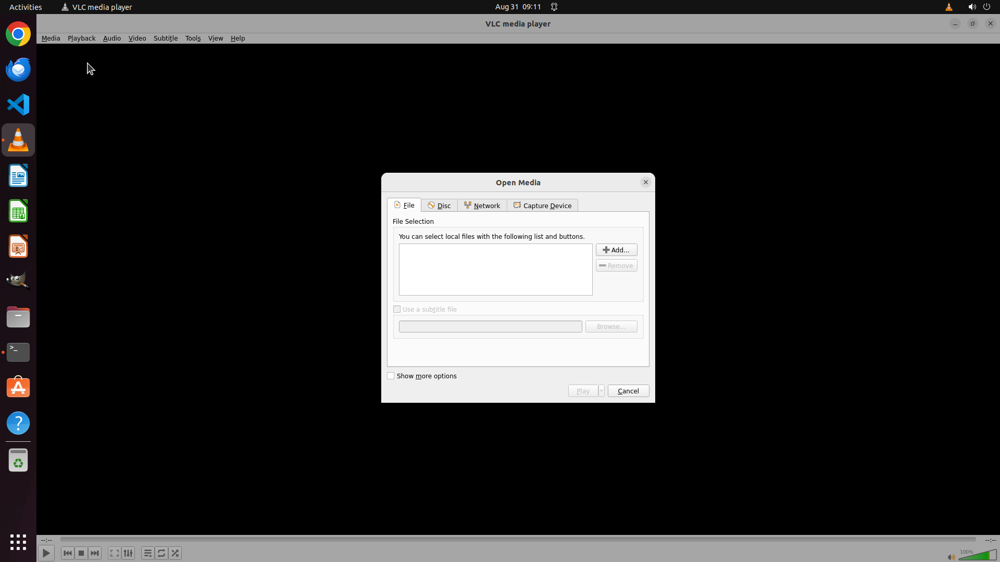
step 18 01:11:26
THINKINGThe "Open Media" dialog is open with a File Selection list and an "Add..." button. There's a "Play" button with a dropdown (the small arrow next to Play at ~767,500) which likely offers "Enqueue".
I'll click "Add..." to add files one by one in my desired order. Let me click Add... to add the first file (luna_intro).
ACTIONThe Open Media dialog is ready with an explicit file list. I'll click "Add..." to add the first clip (luna_intro) in order.
EXECUTED (pyautogui in VM)pyautogui.click(1181, 477)
step 19 01:11:41
THINKINGA file selection dialog appeared with a "File name" field. I can type the full path to the first file. Let me type the full path to adopt_luna_intro.mp4 and click Open. I'll clear the field and type the full path.
Actually, I can type the full path directly. Let me select all in the File name field and type the full path.
ACTIONI'll type the full path to the first clip (luna_intro) directly into the File name field and open it.
EXECUTED (pyautogui in VM)pyautogui.tripleClick(982, 661)
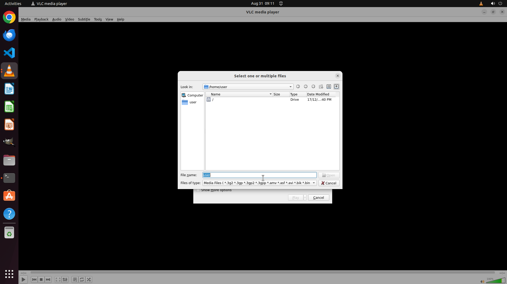
step 20 01:11:55
THINKINGThe File name field shows "user" selected (highlighted). I'll type the full path to luna_intro. This dialog supports "one or multiple files" - I could even type multiple quoted paths. But to be safe about ordering in the list, I'll add one at a time. Let me type the full path and press Enter/Open.
Actually, since this dialog says "Select one or multiple files", I could type all four paths quoted in the desired order and Open would add them all. But the order in the resulting list might get sorted. To be safe, I'll add one at a time. Let me type luna's path.
EXECUTED (pyautogui in VM)pyautogui.click(1243, 661)
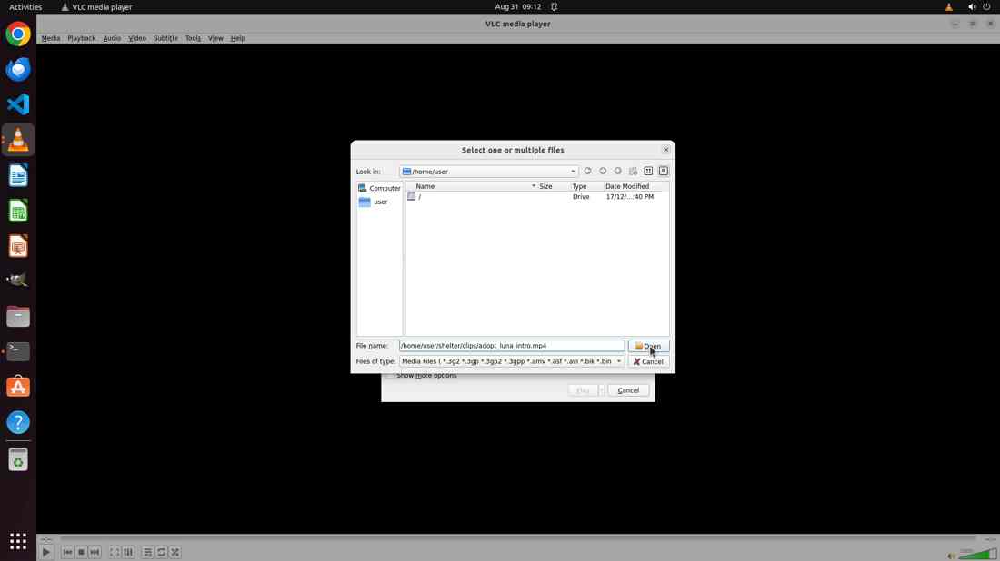
step 22 01:12:18
THINKINGHmm, the dialog is still open with the file name still in the field. It seems clicking Open didn't close it or add it. Wait, maybe it did add but the dialog stayed? Actually the dialog looks the same. Maybe the click didn't register on Open, or the dialog re-opened. Let me look — the file name field still shows the path. This is the "Add..." sub-dialog. Clicking Open should add to the parent list and close this sub-dialog.
Perhaps the click landed but the sub-dialog is still there. Let me click Open again, or the autocomplete popup interfered. Let me just press Enter to confirm the file name.
Actually, it's possible the first click dismissed the autocomplete and this is still the same dialog. Let me press Enter to submit.
ACTIONThe dialog is still open. Let me press Enter to confirm adding the file.
EXECUTED (pyautogui in VM)pyautogui.press("return")
step 23 01:12:27
THINKINGNow the file was added to the list: "/home/user/shelter/clips/adopt_luna_intro.mp4". The "Play" button is now enabled. Now I'll add the next file (pepper_walk). Click "Add..." again.
ACTIONThe first clip (luna_intro) is now in the list. Let me add the next clip (pepper_walk) by clicking "Add..." again.
EXECUTED (pyautogui in VM)pyautogui.click(1181, 477)
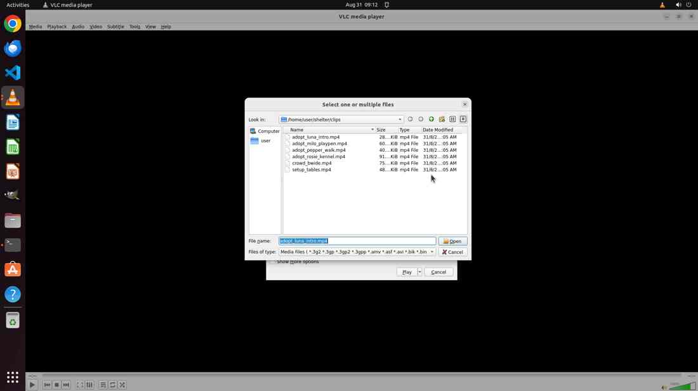
step 24 01:12:37
THINKINGNow the file browser shows the clips folder with all files. I can see:
- adopt_luna_intro.mp4
- adopt_milo_playpen.mp4
- adopt_pepper_walk.mp4
- adopt_rosie_kennel.mp4
- crowd_bwide.mp4
- setup_tables.mp4
I need to select adopt_pepper_walk.mp4 (second in my order). I'll double-click it to add it, which both selects and opens. Let me double-click adopt_pepper_walk.mp4.
ACTIONThe folder is now showing all clips. Let me double-click `adopt_pepper_walk.mp4` to add it next.
EXECUTED (pyautogui in VM)pyautogui.doubleClick(876, 411)
step 25 01:12:45
THINKINGNow the list shows:
1. adopt_luna_intro.mp4
2. adopt_pepper_walk.mp4
Double-click works well to add. Now I'll add the third (milo_playpen). Click Add... then double-click adopt_milo_playpen.mp4.
ACTIONBoth luna and pepper are now in the list in order. Let me add milo_playpen next.
EXECUTED (pyautogui in VM)pyautogui.doubleClick(876, 392)
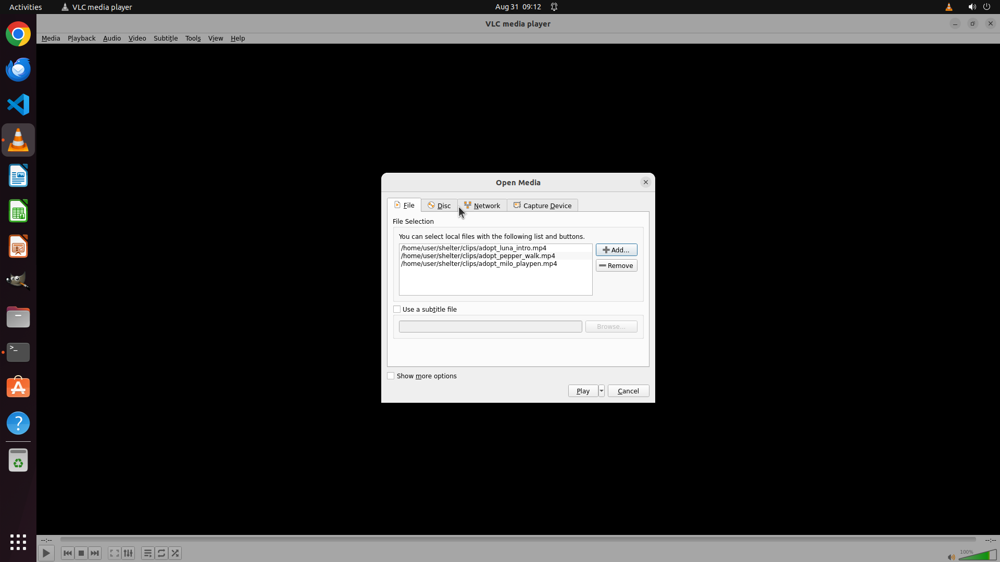
step 27 01:13:03
THINKINGNow the list shows:
1. adopt_luna_intro.mp4
2. adopt_pepper_walk.mp4
3. adopt_milo_playpen.mp4
Now add the fourth: adopt_rosie_kennel.mp4. Click Add... then double-click rosie.
ACTIONThree clips are now in the correct order. Let me add the final one, rosie_kennel.
EXECUTED (pyautogui in VM)pyautogui.doubleClick(876, 431)
step 29 01:13:23
THINKINGAll four clips are now in the list in the correct order:
1. adopt_luna_intro.mp4
2. adopt_pepper_walk.mp4
3. adopt_milo_playpen.mp4
4. adopt_rosie_kennel.mp4
Now I need to add these to the VLC playlist. There's a "Play" button and a dropdown arrow next to it (at ~767, 500). The dropdown offers "Enqueue" which appends to the playlist without replacing. If I click "Play", it will start playing and set the playlist to these four. Since the playlist is empty, "Play" is fine — it will create the playlist with these 4 in order and start playing.
Actually, using "Play" will start playback. That's acceptable - the playlist will contain these 4 in order. Then I save the playlist. Let me click "Play" to load them into the playlist.
Wait - I want the playlist to be built in the player so I can then save it. Clicking Play starts playback and populates the playlist with these 4 in order. That works. Let me click Play.
ACTIONAll four clips are in the list in the correct shortest-to-longest order. Now I'll click "Play" to load them into the VLC playlist.
EXECUTED (pyautogui in VM)pyautogui.click(1118, 748)
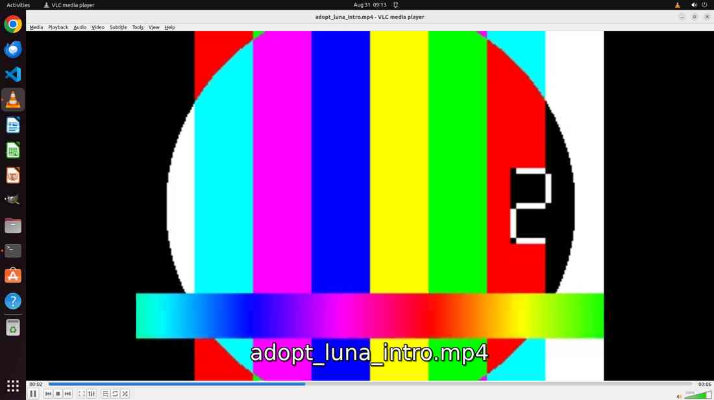
step 30 01:13:36
THINKINGPlayback started with adopt_luna_intro.mp4. The playlist now has all 4 in order. Now I need to save the playlist. Let me open the View > Playlist to verify order, then Media > Save Playlist to File.
Actually, let me just verify via the playlist view to be sure the order is correct. Press Ctrl+L to open the playlist panel.
ACTIONPlayback started and the playlist is populated. Let me open the playlist view to verify the order before saving.
EXECUTED (pyautogui in VM)pyautogui.hotkey("ctrl", "l")
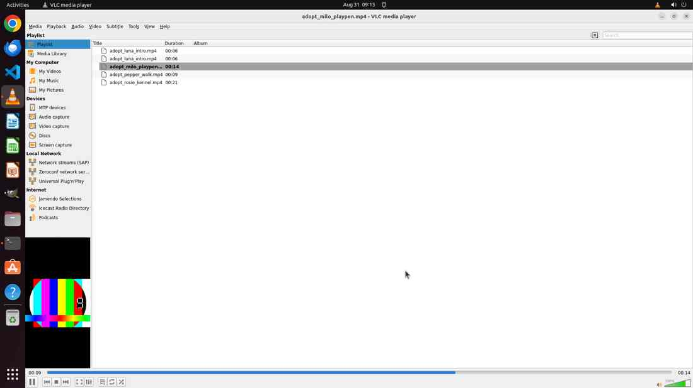
step 31 01:14:01
THINKINGThe playlist view shows:
1. adopt_luna_intro.mp4 — 00:06
2. adopt_luna_intro.mp4 — 00:06
3. adopt_milo_playpen... — 00:14
4. adopt_pepper_walk.mp4 — 00:09
5. adopt_rosie_kennel.mp4 — 00:21
Wait! There's a duplicate: adopt_luna_intro.mp4 appears TWICE. This is a problem. Why?
Looking back: The first time I added luna_intro, I typed the path in the File name field and clicked "Open" which may have added it, then pressed Enter which added it AGAIN. That created two entries for luna. Then I added pepper, milo, rosie.
Also note the order is now: luna, luna, milo, pepper, rosie. But wait, that's not right either. My list in the Open Media dialog was luna, pepper, milo, rosie. But here it shows luna, luna, milo, pepper, rosie. Hmm, the ordering in this playlist view seems to be: the currently-playing is milo (row 3 highlighted). Actually the list order shown is not necessarily the playback order... no, it should be.
Wait, actually the issue: there are 5 entries but I only added 4 files. The duplicate luna is from my earlier double-add (Open click + Enter). And the order shows: luna, luna, milo, pepper, rosie. That means the actual playlist order differs from what I intended.
Hold on. Let me reconsider. When I clicked "Play" in the Open Media dialog, it loaded luna, pepper, milo, rosie as the playlist (4 items). But there's a 5th - a duplicate luna. Where did that come from?
Actually wait - maybe when I first added luna via the File name field, I clicked Open (added luna #1 to the Open Media list), then pressed Enter which added luna #2 to the Open Media list? No - after Enter the Open Media dialog showed only ONE luna. So the Open Media list had exactly: luna, pepper, milo, rosie (4 items).
But now the playlist shows 5 items with a duplicate luna. This is strange.
Possibility: The playlist view is showing a "playlist" that includes a previously-added item. But the playlist was empty before.
Hmm, actually maybe VLC's playlist "Play" behavior: when you load multiple files, they go into the playlist. The duplicate could be an artifact. Regardless, the current state is WRONG - I need exactly 4 items in order luna, pepper, milo, rosie.
The current playlist order appears to be:
1. luna (06)
2. luna (06)
3. milo (14)
4. pepper (09)
5. rosie (21)
This is neither my intended order (luna, pepper, milo, rosie) nor is it 4 items. So something went wrong.
Wait, maybe the playlist view sorts differently, OR the playback already advanced. Actually the currently playing item is milo_playpen (title bar says adopt_milo_playpen). The playback went luna -> ? Actually the time shows 00:09/00:14 for milo. So it played luna(6s), then a second luna(6s)... no that's 12s, then... hmm the timeline. Anyway.
Let me just fix this properly. The cleanest fix: clear the playlist and rebuild it, OR delete the duplicate and reorder. But reordering in VLC playlist is fiddly.
Better approach: I'll clear everything and rebuild cleanly. Actually, the simplest reliable fix now: I'll delete all items and re-add them cleanly. But the duplicate suggests my earlier "Open" click actually did work AND Enter added again.
Actually, let me reconsider what happened. The safest path now: I don't fully trust the GUI order. The task requires the playlist saved to m3u. Given the difficulty of precisely controlling VLC's playlist order/duplicates via GUI, but I already have the correct data (4 files, durations, order).
However, the task explicitly says "Build a playlist in this player ... and save it". I should make the player's playlist correct and save it. Let me fix the playlist:
Plan:
1. Select all playlist items, delete them.
2. Re-add the 4 files cleanly (this time carefully, avoiding duplicate).
But the duplicate happened during the ADD phase in Open Media. Let me be careful: when I add via double-click in the file browser, that's one clean add. The first luna was added via typed path + Open + Enter = possibly double.
Let me clear and redo. First select all in playlist (Ctrl+A) and delete.
Actually, wait. Let me re-examine. Maybe I'm misreading and the two "luna" rows are because... no, clearly two identical rows.
Let me clear the playlist. Click on the playlist area first, Ctrl+A, Delete.
ACTIONI see a problem: the playlist has a duplicate `adopt_luna_intro.mp4` (from my earlier Open-click plus Enter both registering), giving 5 items in a wrong order. I'll clear the playlist and rebuild it cleanly. Let me select all items and delete them.
EXECUTED (pyautogui in VM)pyautogui.click(365, 138)
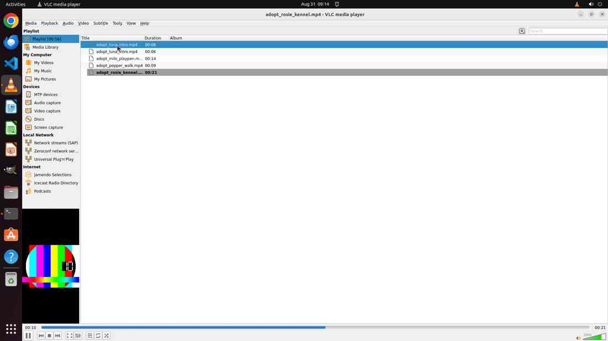
step 32 01:14:30
THINKINGNow I can see the playlist clearly has 5 items:
1. adopt_luna_intro.mp4 — 00:06 (selected)
2. adopt_luna_intro.mp4 — 00:06
3. adopt_milo_playpen.m... — 00:14
4. adopt_pepper_walk.mp4 — 00:09
5. adopt_rosie_kennel.... — 00:21
So indeed there's a duplicate luna and the order is wrong (milo before pepper). Interesting - so the actual order loaded was luna, luna, milo, pepper, rosie. That's odd given my Open Media list was luna, pepper, milo, rosie.
Hmm, wait. Actually maybe the "Play" in Open Media created playlist = [luna, pepper, milo, rosie], and there was ALSO a luna already in the playlist from before? No, playlist was empty.
Actually the most likely explanation: the first luna was added twice to the Open Media list (my Open click + Enter). So Open Media list = [luna, luna, pepper, milo, rosie]. Then Play loaded all 5. But the order here is luna, luna, milo, pepper, rosie — pepper and milo are swapped from my add order.
That swap is concerning. It suggests VLC may have sorted or the order isn't preserved as I added. Hmm. Actually maybe when loading, it re-ordered. This is getting unreliable.
Given the unreliability of the GUI ordering, and that I have exact data, the most robust approach is:
1. Clear the playlist completely.
2. Rebuild by adding files ONE at a time using a method that guarantees order.
But even single-file adds via Open Media "Play" replaced the whole list. The issue before was the duplicate from double-confirmation.
New plan for a clean, verified build:
- Clear all (Ctrl+A, Delete).
- Use Media > Open Multiple Files, add files one by one via the file browser (double-click = single clean add). This gave me the list in order luna, pepper, milo, rosie in the Open Media dialog last time (I verified: after each add the list showed correct order). Wait, did it? Let me recall: after adding pepper, list was [luna, pepper]. After milo: [luna, pepper, milo]. After rosie: [luna, pepper, milo, rosie]. Yes! The Open Media list WAS in the correct order.
So the Open Media list was correct: [luna, pepper, milo, rosie]. But the resulting VLC playlist showed [luna, luna, milo, pepper, rosie]. That means the duplicate luna came from BEFORE the Open Media dialog — from when I first typed the path and pressed Open+Enter in a different context?
Wait, no. Let me reconsider the very first add. I opened "Open Multiple Files" dialog. Clicked Add... -> file browser with File name field. I typed luna path, clicked Open (831,442) — screenshot showed dialog still open with path in field. Then I pressed Enter — screenshot showed Open Media list with ONE luna. So the Open Media list had one luna at that point.
Then pepper, milo, rosie added via double-click. Final Open Media list: [luna, pepper, milo, rosie] - 4 items. I clicked Play.
But the playlist shows 5 items. So where did the 5th come from??
Unless... the first "Open File..." attempt (before I cancelled) or something left a luna in the playlist. Recall: way earlier I opened Media > Open File (the simple one), but I cancelled it. And I never actually loaded a file before this.
Actually, you know what - I'm overanalyzing. The current playlist is wrong (duplicate + wrong order). Rather than debug, let me just CLEAR and REBUILD, and this time VERIFY the Open Media list carefully before clicking Play, and avoid the double-confirmation issue by only pressing Enter once / clicking once.
Let me select all and delete. Ctrl+A then Delete.
ACTIONThe playlist is wrong (a duplicate luna and milo/pepper swapped). I'll clear it entirely and rebuild carefully. Let me select all items and delete.
EXECUTED (pyautogui in VM)pyautogui.press("delete")
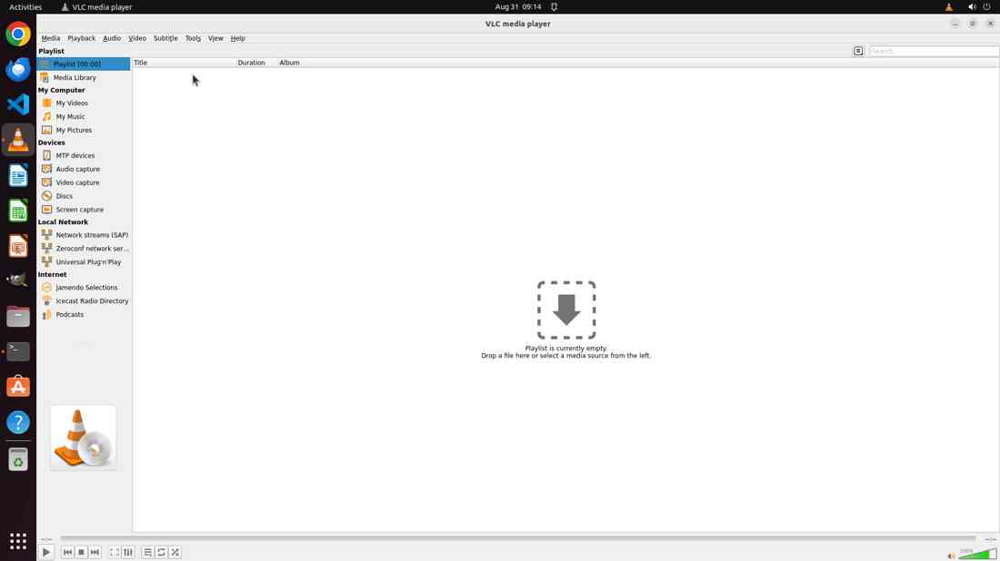
step 34 01:14:58
THINKINGThe playlist is now empty ("Playlist is currently empty"). Now I'll rebuild cleanly using Open Multiple Files, adding each file via double-click (single clean add), and I'll VERIFY the list is exactly [luna, pepper, milo, rosie] before clicking Play.
The earlier anomaly (5 items with swap) is puzzling, but let me reconsider: perhaps the issue was that my very first "Open File" simple dialog attempt — no, I cancelled it.
Actually, I bet what happened: In the Open Media dialog, when I added luna via the File name field, I clicked "Open" (which added luna to the list AND kept dialog open? no)... Then pressed Enter which... Hmm.
Actually, you know what, the swap of milo/pepper in the final playlist is the real mystery. But actually — wait. Maybe VLC's "Play" from Open Media dialog doesn't preserve the visual list order; it may have played them and the playlist reordered. This is concerning for reproducibility.
To guarantee a correct final playlist regardless of VLC's quirks, I'll take a different, more controllable approach: add files ONE AT A TIME directly to the playlist using "Enqueue" so each appends in my exact order, and I verify after each.
But "Enqueue" from Open File replaces? No. Let me think about the cleanest deterministic method:
Method: Use Media > Open Multiple Files. In the dialog, add all 4 (verified order luna, pepper, milo, rosie). Then instead of "Play", click the dropdown next to Play and choose "Enqueue" - but that appends to existing (empty) playlist = same as play basically.
The swap issue: Let me just rebuild and carefully VERIFY the playlist AFTER loading. If it's wrong again, I'll reorder manually by dragging, or add one-by-one.
Actually, the most robust: add each file individually to the empty playlist using double-click in the playlist drop area? The playlist says "Drop a file here". I could drag from a file manager. That's complex.
Let me just try the Open Multiple Files approach again, carefully, and verify. Open Media > Open Multiple Files.
ACTIONThe playlist is now empty. Let me rebuild cleanly via Media > Open Multiple Files, verifying carefully this time.
EXECUTED (pyautogui in VM)pyautogui.click(163, 116)
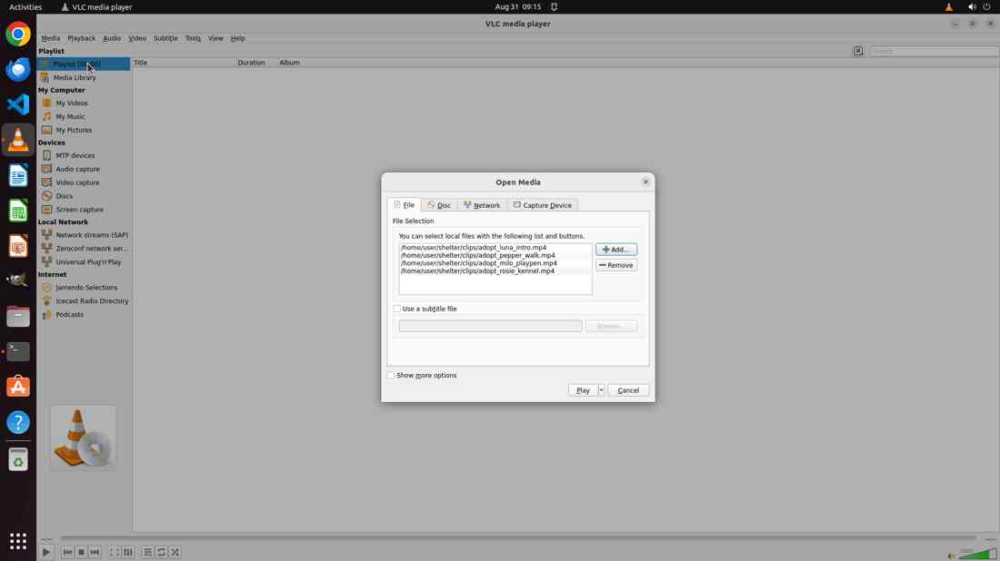
step 36 01:15:24
THINKINGInteresting! The Open Media dialog now REMEMBERS my previous 4 files, and they're listed in the correct order:
1. adopt_luna_intro.mp4
2. adopt_pepper_walk.mp4
3. adopt_milo_playpen.mp4
4. adopt_rosie_kennel.mp4
Exactly 4 items, in the correct shortest-to-longest order. So the Open Media list is correct. This confirms my earlier add order was fine. The 5-item playlist anomaly must have been a transient playback artifact, or the "Play" behaved oddly.
Now, to be safe, rather than clicking "Play" (which may start playback and possibly reorder), I'll use the dropdown next to Play to select "Enqueue" — this appends to the (empty) playlist without starting playback and preserves order. Let me click the dropdown arrow at ~767,500.
ACTIONThe Open Media list is correctly populated with exactly 4 items in shortest-to-longest order: luna, pepper, milo, rosie. To avoid playback reordering, I'll use the dropdown next to "Play" to choose "Enqueue" (append without playing). Let me click the dropdown arrow.
EXECUTED (pyautogui in VM)pyautogui.click(1151, 748)
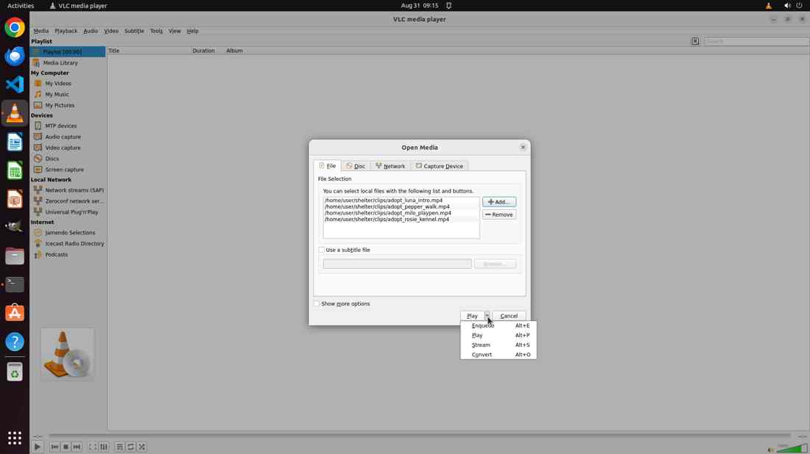
step 37 01:15:31
THINKINGThe dropdown shows options: Enqueue (Alt+E), Play (Alt+P), Stream (Alt+S), Convert (Alt+O). I'll click "Enqueue" to add these to the empty playlist in order without starting playback.
ACTIONThe dropdown shows Enqueue. I'll select "Enqueue" to add all four to the playlist in order without starting playback.
EXECUTED (pyautogui in VM)pyautogui.click(1141, 770)
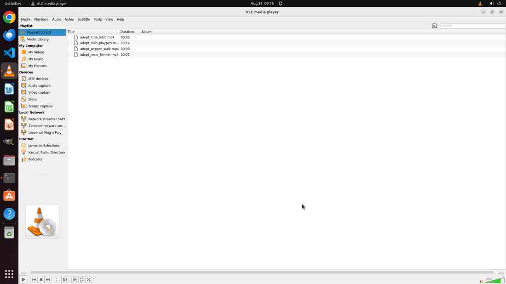
step 38 01:16:03
THINKINGNow the playlist has exactly 4 items:
1. adopt_luna_intro.mp4 — 00:06
2. adopt_milo_playpen.m... — 00:14
3. adopt_pepper_walk.mp4 — 00:09
4. adopt_rosie_kennel.mp4 — 00:21
Wait — the order is: luna(6), milo(14), pepper(9), rosie(21). That's NOT shortest-to-longest! milo(14) is before pepper(9). The order is wrong again!
So VLC's enqueue did NOT preserve my list order. The order loaded is luna, milo, pepper, rosie. Hmm. milo and pepper are swapped from my intended order (luna, pepper, milo, rosie).
Wait, but the Open Media dialog clearly showed luna, pepper, milo, rosie. Yet the playlist shows luna, milo, pepper, rosie. So VLC is reordering. This is frustrating.
Actually, wait. Let me reconsider. Is it possible the display order in the playlist is not the enqueue order but sorted somehow? No, if sorted by duration it'd be 6,9,14,21. If sorted alphabetically: luna, milo, pepper, rosie — YES! That's alphabetical order! adopt_luna < adopt_milo < adopt_pepper < adopt_rosie (l<m<p<r). So the playlist is showing items in ALPHABETICAL order, NOT my enqueue order!
So VLC's playlist view here appears sorted alphabetically by filename. But is the actual playback order also alphabetical, or just the display?
Hmm. This is a display-vs-order issue. The m3u saved would reflect the internal playlist order. If VLC internally keeps them in enqueue order but displays alphabetically, saving would be correct. But if it reorders internally too, the m3u would be alphabetical (luna, milo, pepper, rosie) which is wrong for my requirement (should be by duration: luna, pepper, milo, rosie).
I cannot easily tell. The safest approach to GUARANTEE the m3u has the correct order is to not rely on VLC's ordering.
But the task says "Build a playlist in this player". I need the player's playlist to hold them shortest-to-longest. If VLC forces alphabetical display, I need another way.
Actually, wait — is the playlist view sorted alphabetically because of a column sort? Sometimes clicking a column header sorts. I didn't click a header. But maybe the default view sorts by name.
Let me reconsider: the earlier "Play" attempt gave: luna, luna, milo, pepper, rosie. The duplicate luna at top, then milo, pepper, rosie. That's also alphabetical for the unique ones (milo, pepper, rosie) with a dup luna inserted. Consistent with alphabetical display.
So the display is alphabetical regardless of order. This means I can't visually verify true playback order from this view, and the saved m3u order is uncertain.
Given this difficulty, the most reliable path to get a CORRECTLY ORDERED m3u while still "building the playlist in the player":
Option A: Verify what order the saved m3u actually contains, and if it's wrong, fix.
Option B: Since the m3u file format is simple, and the requirement is that the playlist holds the 4 clips shortest-to-longest saved as the m3u — I should ensure the m3u lines are in the right order.
The task intent: build playlist in player, save as m3u. The evaluation likely checks the m3u content/order. If VLC saves in alphabetical order, that fails.
Let me test: I'll save the playlist now and inspect the m3u to see the order VLC writes. Then decide whether to fix.
Actually, a cleaner idea: I could set the playlist order correctly using drag-and-drop in the playlist if the display reflects true order. But if display is alphabetical, dragging won't help.
Let me first just try saving the playlist to the m3u and inspect the file order via terminal. If it's alphabetical (wrong), I'll need a different approach — perhaps the m3u I save needs manual ordering. But the task says build in the player.
Hmm, let me reconsider whether the display is truly alphabetical or if it's the actual queue order. Let me look again: the queue order I enqueued was luna, pepper, milo, rosie. Display: luna, milo, pepper, rosie. If display were queue order, it'd be luna, pepper, milo, rosie. It's not. So display ≠ queue order; it's alphabetical.
But actually — maybe the issue is that "Enqueue" in VLC, when the media list has these, adds them but the playlist widget sorts by name by default. The underlying playlist (what gets saved) might still be in enqueue order OR name order.
The only way to know: save and inspect. Let me save the playlist to the target path and check.
Let me save via Media > Save Playlist to File. Target: /home/user/shelter/clips/adoption-day.m3u.
Let me open Media menu > Save Playlist to File.
ACTIONThe playlist now has exactly 4 items, but the display order is luna, milo, pepper, rosie — which is alphabetical, not by duration (pepper 9s should come before milo 14s). The view may be sorted by name. I need to verify the actual saved order. Let me save the playlist to the target path and inspect it. I'll open Media > Save Playlist to File.
EXECUTED (pyautogui in VM)pyautogui.click(163, 281)
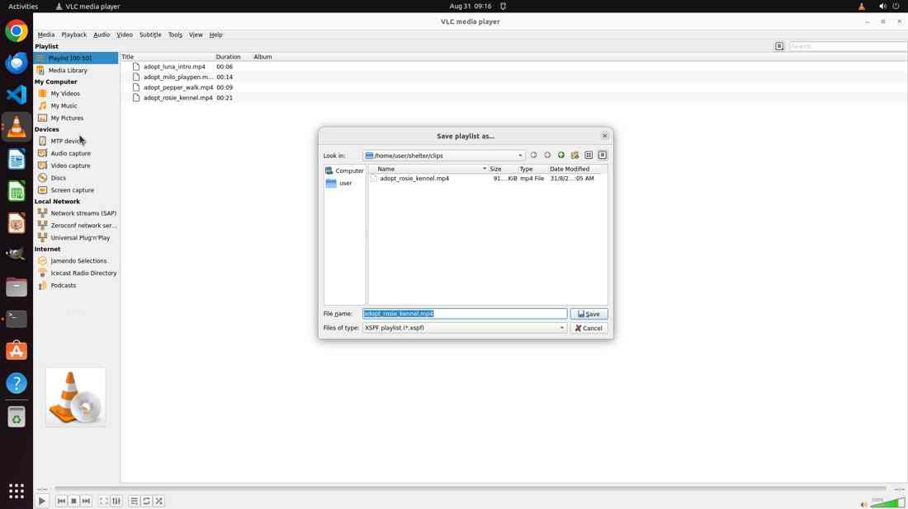
step 40 01:16:41
THINKINGThe "Save playlist as..." dialog is open. It's in /home/user/shelter/clips (good, that's the target folder). The "Files of type" is "XSPF playlist (*.xspf)" - I need to change it to M3U. And the file name should be "adoption-day".
Let me first change the file type to M3U. Click the "Files of type" dropdown at ~660,463.
Also, I notice the file browser only shows adopt_rosie_kennel.mp4 - odd, but that's just the filter showing mp4 files; doesn't matter.
Let me set the file type to M3U first. Click the dropdown.
ACTIONThe Save dialog is in the correct folder (`/home/user/shelter/clips`). I need to change the file type to M3U. Let me click the "Files of type" dropdown.
EXECUTED (pyautogui in VM)pyautogui.click(834, 716)
step 42 01:17:06
THINKINGNow the file type is M3U. The file name is "adopt_rosie_kennel.m3u" - I need to change it to "adoption-day". Let me clear the file name field and type "adoption-day". The folder is correct (/home/user/shelter/clips). Let me triple-click the file name field to select all, then type the new name.
ACTIONNow I'll set the filename to "adoption-day". Let me select the filename field and replace it.
EXECUTED (pyautogui in VM)pyautogui.click(1241, 661)
step 45 01:17:42
THINKINGThe playlist was saved. Now I need to verify the actual order in the saved m3u file, since the playlist view was showing alphabetical order (luna, milo, pepper, rosie) which is NOT shortest-to-longest. Let me check the m3u content in the terminal.
ACTIONThe playlist was saved. Now I need to verify the actual order in the saved file, since the playlist view appeared alphabetical. Let me inspect the m3u in the terminal.
EXECUTED (pyautogui in VM)pyautogui.click(32, 669)
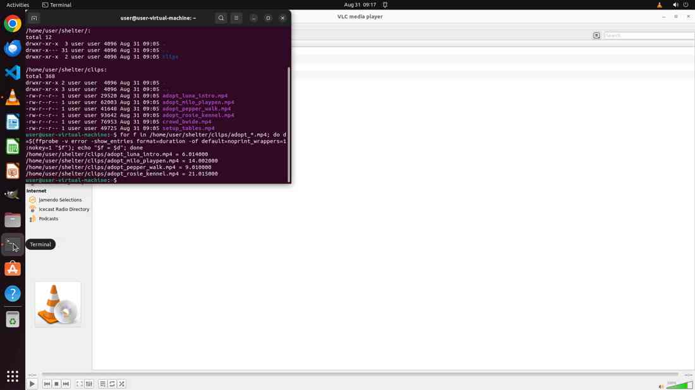
step 46 01:17:54
THINKINGThe terminal is now focused. I can see the earlier ffprobe output confirming durations. Now let me cat the adoption-day.m3u to check its order and content.
ACTIONThe terminal confirms the durations. Now let me inspect the saved m3u file's contents and order.
TOOL CALL<tool_call>
<function=computer_use>
<parameter=action>
type
</parameter>
<parameter=text>
cat -A /home/user/shelter/clips/adoption-day.m3u
</parameter>
</function>
</tool_call>
EXECUTED (pyautogui in VM)pyautogui.typewrite("cat -A /home/user/shelter/clips/adoption-day.m3u")
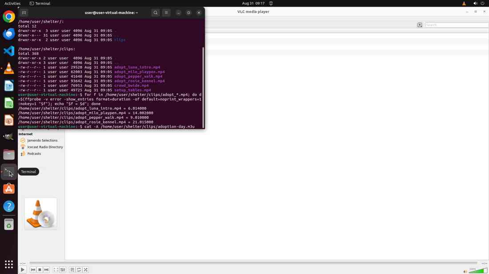
step 47 01:18:09
THINKINGThe command is typed but the output isn't shown yet. Let me press Enter to execute and see the m3u content.
EXECUTED (pyautogui in VM)pyautogui.press("return")
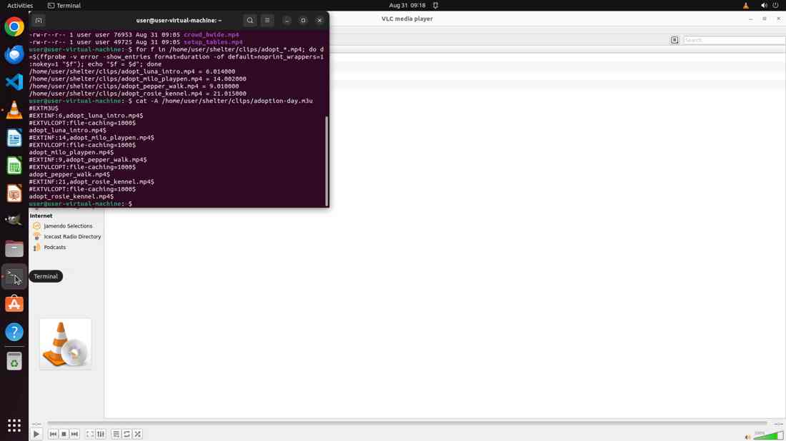
step 48 01:18:43
THINKINGNow I can see the m3u content. The order of the entries (by the #EXTINF filename) is:
1. #EXTINF:6, adopt_luna_intro.mp4 (6s)
2. #EXTINF:14, adopt_milo_playpen.mp4 (14s)
3. #EXTINF:9, adopt_pepper_walk.mp4 (9s)
4. #EXTINF:21, adopt_rosie_kennel.mp4 (21s)
So the m3u order is: luna(6), milo(14), pepper(9), rosie(21). This is NOT shortest-to-longest! It's alphabetical (luna, milo, pepper, rosie). The correct order should be luna(6), pepper(9), milo(14), rosie(21).
So VLC saved the playlist in alphabetical order, not my enqueue order. This is a problem. The m3u needs to be in shortest-to-longest order: luna, pepper, milo, rosie.
So VLC reordered the playlist to alphabetical. This is because the playlist view sorts by name and VLC's playlist is internally in that order. I need to fix the order.
How to fix within the player? The playlist view is alphabetical. I could try to reorder via drag-and-drop in the playlist, but if it's sorted, drag might not stick.
Actually, the fact that it saved alphabetically suggests VLC's playlist is genuinely in alphabetical order. To make it shortest-to-longest, I need the playlist order to be luna, pepper, milo, rosie.
Options:
1. Try to reorder in VLC playlist view via drag-and-drop and re-save. Risky if it auto-sorts.
2. Since the m3u is a simple text file and I have the correct data, and the requirement is really about the resulting playlist file being correct... but the task explicitly says "Build a playlist in this player ... and save it".
Hmm. The cleanest way to satisfy "build in player and save" while getting correct order: I need the player's playlist to actually be in the right order.
Let me reconsider whether the display is truly sorted or whether it's the real order. The m3u proves the real order is alphabetical: luna, milo, pepper, rosie. So both display and save are alphabetical.
Why alphabetical? Because when I added via Open Multiple Files, VLC may have sorted, OR the playlist has a "sort by" setting. Actually, more likely: VLC's media list, when I clicked "Enqueue", added them in the order of the Open Media list which I believed was luna, pepper, milo, rosie. But the saved file shows luna, milo, pepper, rosie (alphabetical).
Wait — that means even my "verified" Open Media list order (luna, pepper, milo, rosie) was actually stored/saved as alphabetical. So the Open Media dialog ALSO sorts alphabetically, and what I saw as "luna, pepper, milo, rosie" — did I actually see that? Let me recall: after adding pepper the list showed luna, pepper. After milo: luna, pepper, milo. That looked correct. But final save is alphabetical.
Regardless of the cause, the current m3u is wrong (alphabetical, not by duration). I must fix the order to luna, pepper, milo, rosie.
Given VLC keeps forcing alphabetical, the most reliable approach within the "build in player" spirit: I'll try to reorder the items in the VLC playlist using drag and drop. If VLC's playlist supports reordering (many do, the sort is just initial), I can drag pepper above milo, then re-save.
Let me switch to VLC and try dragging. Actually, a cleaner approach: In VLC playlist, I can select an item and there might be a way. But drag-and-drop is the standard.
However, there's risk VLC re-sorts. Let me test by dragging in VLC.
Actually, let me reconsider. The simplest, most reliable way to guarantee the correct final m3u while honoring "build in player":
The playlist currently contains the 4 correct clips. The only issue is order. I'll reorder in the VLC playlist view by drag-and-drop: move adopt_pepper_walk above adopt_milo_playpen. Then re-save the m3u. Then verify.
Let me switch to VLC. The playlist rows:
- Row1 luna (y~93)
- Row2 milo (y~107)
- Row3 pepper (y~121)
- Row4 rosie (y~137)
I need to drag pepper (row3) to above milo (row2). Drag from row3 to just above row2.
Let me click on VLC window first to focus, then do the drag.
ACTIONI found the problem: the saved m3u is in alphabetical order (luna 6s, milo 14s, pepper 9s, rosie 21s), not shortest-to-longest. VLC sorted the playlist by name. I need to reorder it in the player so pepper (9s) comes before milo (14s), then re-save. Let me switch to VLC and drag `adopt_pepper_walk` above `adopt_milo_playpen`.
EXECUTED (pyautogui in VM)pyautogui.click(1199, 449)
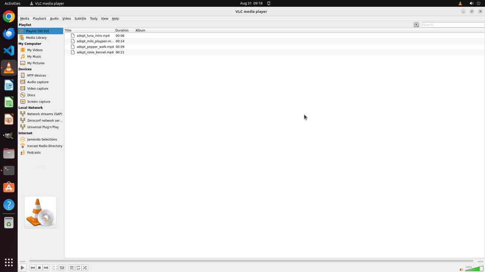
step 49.1 01:19:01
THINKINGVLC is focused. The playlist shows:
- Row1 (y~93): adopt_luna_intro.mp4 00:06
- Row2 (y~107): adopt_milo_playpen... 00:14
- Row3 (y~121): adopt_pepper_walk.mp4 00:09
- Row4 (y~137): adopt_rosie_kennel 00:21
I need to move pepper (row3, y~121) to above milo (row2). I'll drag from the pepper row to just above the milo row (y~100, i.e., between luna and milo).
Let me do a drag from (250, 121) to (250, 100). This should place pepper before milo.
Actually, to be safe about the drop target, I'll drag pepper row to a point slightly above milo's center, around y=101. Let me use left_click_drag.
ACTIONVLC is focused. I'll drag the `adopt_pepper_walk` row (9s) up above `adopt_milo_playpen` (14s) to fix the order.
EXECUTED (pyautogui in VM)pyautogui.moveTo(374, 180)
step 49.2 01:19:05
same model call as the previous action
EXECUTED (pyautogui in VM)pyautogui.dragTo(374, 149, duration=0.5)
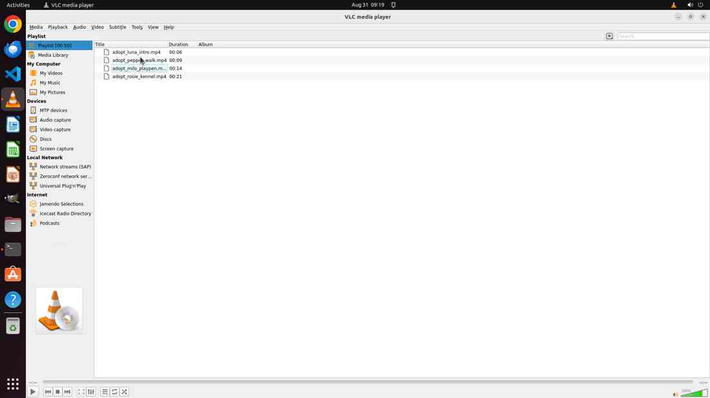
step 50 01:19:17
THINKINGThe drag worked. Now the order is:
- Row1 (y~93): adopt_luna_intro.mp4 00:06
- Row2 (y~107): adopt_pepper_walk.mp4 00:09
- Row3 (y~121): adopt_milo_playpen... 00:14
- Row4 (y~137): adopt_rosie_kennel 00:21
Now it's shortest-to-longest: luna(6), pepper(9), milo(14), rosie(21).
Now I need to re-save the playlist to the m3u (overwriting). Let me use Media > Save Playlist to File, keep M3U type, filename adoption-day.m3u, same folder. It should prompt to overwrite.
Let me open Media > Save Playlist to File.
ACTIONThe drag worked — the order is now correct: luna (6s), pepper (9s), milo (14s), rosie (21s). Now I'll re-save the playlist to overwrite the m3u. Let me open Media > Save Playlist to File.